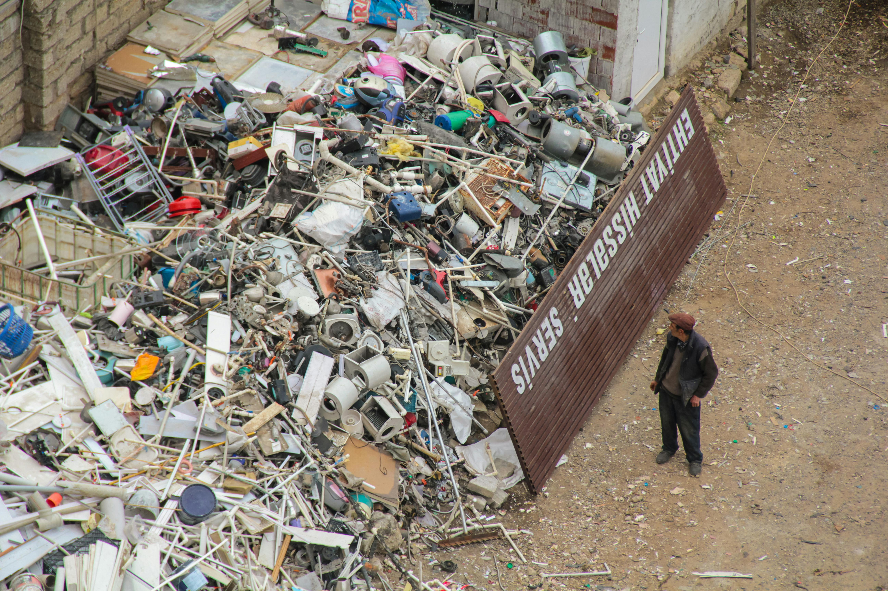
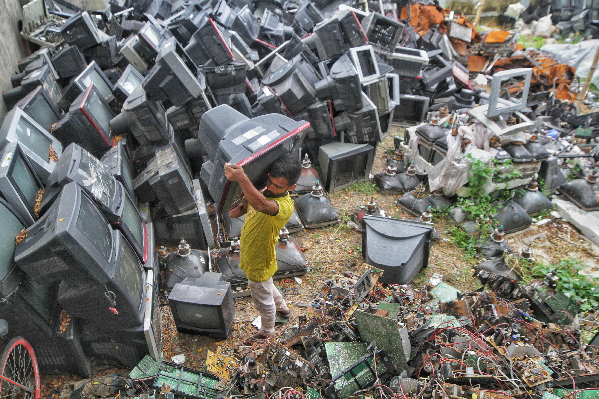
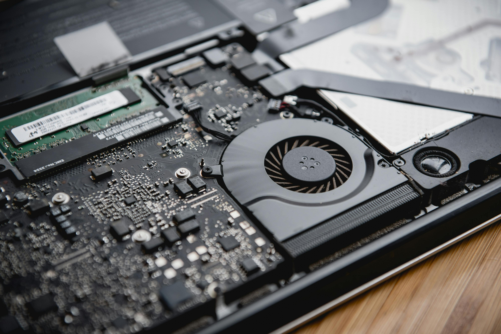

Meio Ambiente e Consumo
Nós consumimos todos os dias. Compramos roupas, celulares e comida. Mas quando esse consumo sai do controle, a conta chega para o meio ambiente.
Muitos produtos viram lixo rápido demais. Eles poluem e contaminam a natureza. Precisamos entender como nossas escolhas afetam o planeta.
Contaminação
A contaminação do solo acontece quando produtos químicos entram na terra. Metais pesados de baterias e eletrônicos são os maiores vilões aqui.
A chuva lava esses materiais e leva as toxinas direto para os lençóis freáticos. O resultado? Água envenenada para plantas, animais e para nós.

- Contamina o solo
- Afeta a água
- Prejudica a saúde
Poluição do Ar
Queimar cabos e placas de forma ilegal libera gases tóxicos na atmosfera.
Essa fumaça piora o aquecimento global e ataca os pulmões. Cidades inteiras sofrem com o ar poluído, especialmente crianças e idosos.
- Gases tóxicos no ar
- Problemas de saúde
- Impacto no clima
Obsolescência Programada
As empresas fazem produtos para quebrar rápido. Isso tem nome: obsolescência programada.
O celular fica lento e para de receber atualizações. Você compra um novo, a empresa lucra, e a pilha de lixo eletrônico só cresce.

- Aumenta o consumo
- Gera mais lixo eletrônico
- Prejudica o meio ambiente
Direito ao Reparo
Você comprou, o aparelho é seu. Mas muitas empresas cobram uma fortuna por peças ou dificultam o conserto de propósito.
O direito ao reparo defende que você mesmo possa arrumar seus eletrônicos. Isso salva dinheiro e evita que um celular bom vá parar no lixo por causa de uma tela quebrada.

- Maior vida útil dos produtos
- Menos lixo
- Mais economia